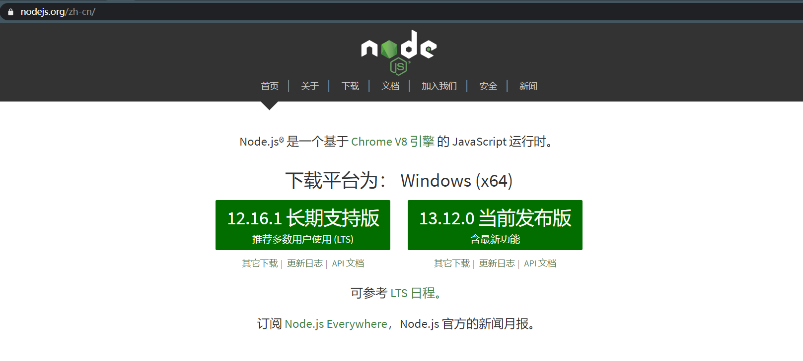
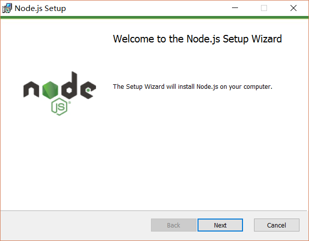
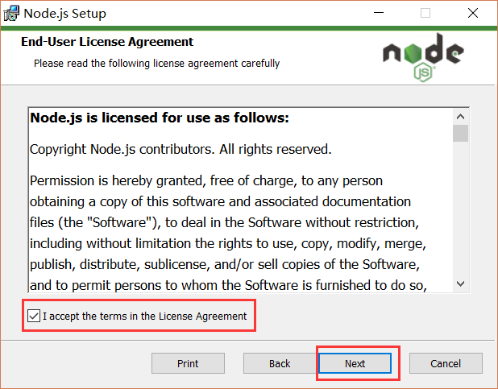
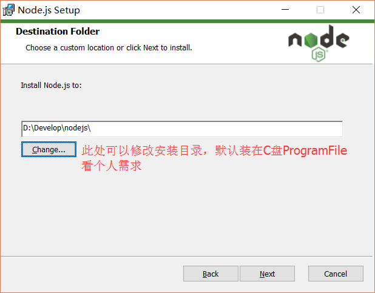
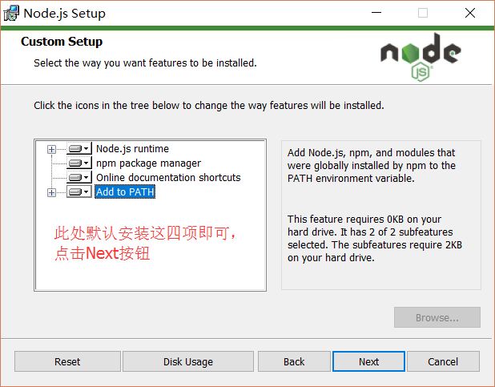
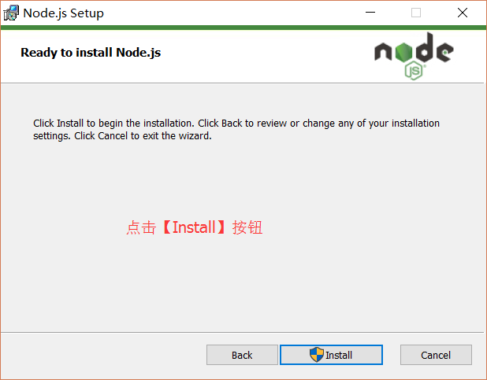
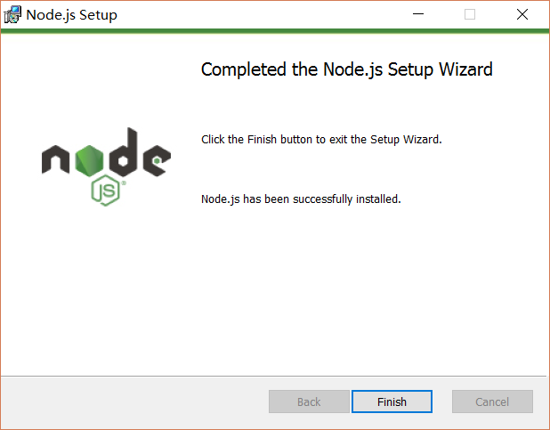
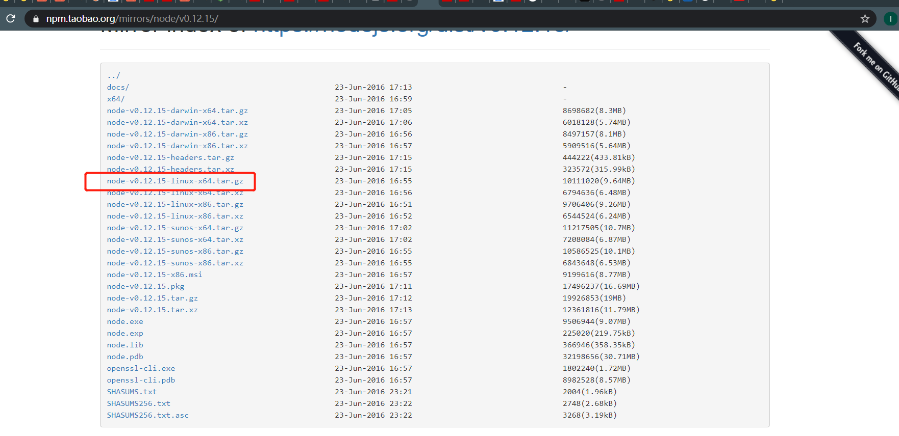

Mark 下 nodejs 每个环境安装方法
# Windows
- 打开 nodejs 官网

首页分为两个版本
- 长期支持版：即稳定版，推荐使用这个
- 当前发布版：最新版本，可能会有 bug
- 我选择了稳定版，下载下来
- 一直 next, 选择安装目录安装即可





 - 验证安装
在键盘按下【win+R】键，输入 cmd，然后回车，打开 cmd 窗口，输入
node -v | |
>v12.6.1 | |
npm -v | |
>6.13.4 |
# Linux
# CentOS
- 添加 node 镜像，setup_12.x 可以替换为你想要的大版本，比如 setup_10.x
$ curl --silent --location https://rpm.nodesource.com/setup_12.x | sudo bash | |
#成功执行会输出下面结果 | |
## Run `sudo yum install -y nodejs` to install Node.js 12.x and npm. | |
## You may also need development tools to build native addons: | |
sudo yum install gcc-c++ make | |
## To install the Yarn package manager, run: | |
curl -sL https://dl.yarnpkg.com/rpm/yarn.repo | sudo tee /etc/yum.repos.d/yarn.repo | |
sudo yum install yarn |
- 安装 nodejs
$ sudo yum install -y nodejs |
- 验证安装
$ node -v | |
$ npm -v |
# Ubuntu
- 添加 nodejs 镜像源，setup_12.x 可以替换为你想要的大版本，比如 setup_10.x
curl -sL https://deb.nodesource.com/setup_12.x | sudo -E bash - |
2. 安装
sudo apt-get install -y nodejs |
- 验证安装
$ node -v | |
$ npm -v |
# 通用安装
- 进入阿里镜像，选择版本后，进入到下载页面，右键复制下载连接
 - linux 下载
wget https://npm.taobao.org/mirrors/node/v0.12.15/node-v0.12.15-linux-x64.tar.gz |
- 下载完后解压到 /usr/local/
$ tar -xvf node-v0.12.15-linux-x64.tar.xz /usr/local/ |
- 讲 node-v0.12.15-linux-x64 文件夹改名为 nodejs
$ mv node-v5.10.1-linux-x64/ nodejs |
- 建立软连接
$ ln -s /usr/local/nodejs/bin/node /usr/local/bin | |
$ ln -s /usr/local/nodejs/bin/npm /usr/local/bin | |
`` | |
3. 验证安装 | |
```bash | |
$ node -v | |
$ npm -v |
# MacOS
留坑。。。
# Node 升级
- 安装 n
npm i -g n |
- 升级 nodejs
- 升级到最新版
n latest |
- 升级到稳定版
n stable |
升级到指定版本
n 版本号 如 n 10.0.0
- 检查版本
node -v |
如果版本没变化则继续执行
- 查看 node 的安装位置
which node | |
--- $ /usr/local/bin/node |
- 修改环境变量
vim /etc/profile |
- 在最下面加入下面两句代码，NODE_HOME 为步骤 4 查询出来的路径，保存文件
export NODE_HOME=/usr/local/bin/node | |
export PATH=$NODE_HOME/bin:$PATH |
- 刷新环境变量，再次检查版本
source /etc/profile | |
node -v |